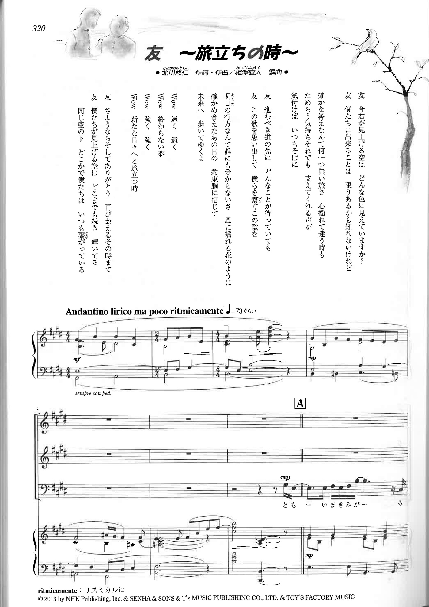

KAVA SOUND / PRACTICE BETA
自主練習
① パート・練習モード
伴奏はYouTubeの混声三部合唱用ピアノ伴奏をそのまま再生します。前の差し引き伴奏は使いません。
同期微調整0.0秒
② 再生
0:00 / 4:35
速度
③ 楽譜・歌詞

1 / 8
④ 録音して聴く
個人練習用。イヤホン推奨。録音は端末内だけで、自動送信しません。
録音待機中
⑤ 合唱録音（クラス練習）
教室全体を録るモードです。KAVA SOUNDの音源は鳴らさず、端末のマイクだけで録音します。録音前に3秒カウントします。
合唱録音待機中